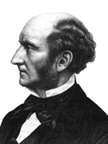
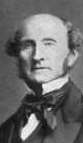

Philosophy Pages
| Dictionary | Study Guide | Logic | F A Q s | ||
|---|---|---|---|---|---|---|
| History | Timeline | Philosophers | Locke | |||
| Philosophy Pages
| Dictionary | Study Guide | Logic | F A Q s | ||
|---|---|---|---|---|---|---|
| History | Timeline | Philosophers | Locke | |||
|
Life and Works . . Utilitarianism . . Individual Liberty . . Women's Rights Bibliography Internet Sources |
The son of James Mill, a friend and follower of Jeremy Bentham, John Stuart Mill was subjected to a rigorous education at home: he mastered English and the classical languages as a child, studied logic and philosophy extensively, read the law with John Austin, and then embarked on a thirty-five career with the British East India Company at the age of seventeen. (He also suffered through a severe bout of depression before turning twenty-one.) Despite such a rich background, Mill credited the bulk of his intellectual and personal development to his long and intimate association with Harriet Hardy Taylor. They were devoted friends for two decades before the death of her husband made it possible for them to marry in 1852; she died in Avignon six years later. Mill continued to write and to participate in political affairs, serving one term in Parliament (1865-68). The best source of information about Mill's life is his own Autobiography (1873). 
Philosophically, Mill was a radical empiricist who held that all human knowledge, including even mathematics and logic, is derived by generalization from sensory experience. In A System of Logic, Ratiocinative and Inductive (1843) he explained in great detail the canons for reasoning inductively to conclusions about the causal connections exhibited in the natural world.
Mill's moral philosophy was a modified version of the utilitarian theory he had learned from his father and Bentham. In the polemical Utilitarianism (1861) Mill developed a systematic statement of utilitarian ethical theory. He modified and defended the general principle that right actions are those that tend to produce the greatest happiness of the greatest number of people, being careful to include a distinction in the quality of the pleasures that constitute happiness. There Mill also attempted a proof of the principle of utility, explained its enforcement, and discussed its relation to a principle of justice. 
Mill's greatest contribution to political theory occurs in On Liberty (1859), where he defended the broadest possible freedom of thought and expression and argued that the state can justify interference with the conduct of individual citizens only when it is clear that doing so will prevent a greater harm to others. Mill also addressed matters of social concern in Principles of Political Economy (1848) and Considerations on Representative Government (1861) and eloquently supported the cause of women's rights in The Subjection of Women (1869).
|
Recommended Reading:
Primary sources:
Secondary sources:
Additional on-line information about Mill includes:
|